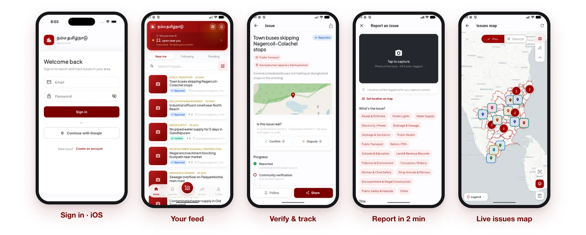

NammaTN / Civic technology
Make local issues easier to follow.
An independent civic product connecting local reporting, community context and transparent follow-through in Tamil and English.
Public product site
Visit NammaTN ↗
The problem
Residents following issues in their local communities.
Reporting an issue is only the beginning. People also need location context, ways to verify what is happening and a public trail they can return to.
How it works
One connected workflow.
- 01Report locallyDescribe an issue with its place and supporting context.
- 02Verify togetherAdd community evidence and jurisdiction context.
- 03Follow the recordReturn to the public trail and track reported follow-through.
Engineering workflow · a simplified view of the product, not a screen mockup.
Engineering decisions
What matters beneath the interface.
Keep the issue connected to geography and jurisdiction, with bilingual participation and community verification as parts of the workflow.
NammaTN is independent civic technology, not an official government service. A report or community verification does not establish an official resolution.
My contribution
From product to implementation.
Founder, product direction and full-stack engineering across the civic interface and its spatial services.
- Tamil and English interface
- Location-aware reporting and map views
- Community verification and transparent tracking
Angular · Go · PostgreSQL · PostGIS · D3 Geo · Docker